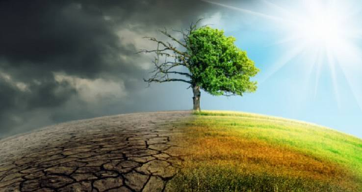

Contaminación de aire y cambio climático

La gestión informal de los residuos electrónicos recurre frecuentemente a la incineración a cielo abierto de cables, carcasas plásticas y tarjetas para extraer metales valiosos. Esta combustión incompleta libera gases tóxicos y partículas en suspensión que deterioran gravemente la calidad del aire atmosférico.
Cifras globales de emisiones por RAEE
| Indicador Atmosférico | Cifra Registrada | Impacto y Fuente |
|---|---|---|
| Emisiones globales de CO2 por RAEE no reciclado | 93 millones de toneladas anuales | Generadas por la extracción de nuevos minerales y la quema informal de componentes. (Fuente: UNITAR / ONU) |
| Liberación de gases refrigerantes (CFC/HFC) | ~5icina millones de toneladas eq-CO2 | Debido al mal manejo y disposición de sistemas de refrigeración y aires acondicionados obsoletos. (Fuente: PNUMA) |
Nota: Las quemas a cielo abierto en vertederos informales son la principal fuente de contaminación atmosférica local por dioxinas.
Explora los factores de impacto atmosférico
Al quemar plásticos con PVC en los cables, se generan compuestos orgánicos persistentes altamente cancerígenos que permanecen en el aire.
El desmantelamiento sin control de electrodomésticos libera gases con un potencial de calentamiento global miles de veces superior al del dióxido de carbono.